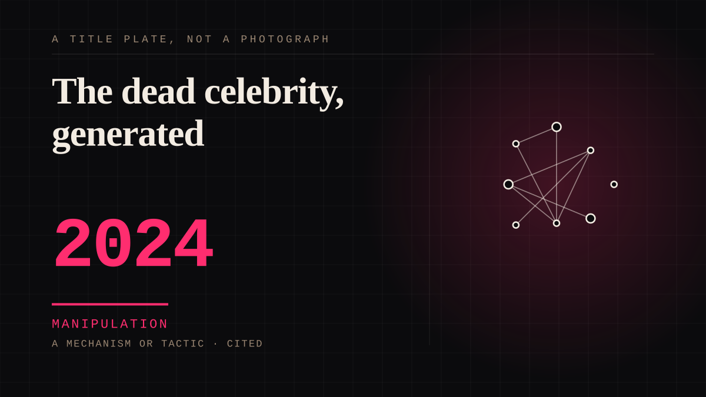

A mechanism or tactic · 2024 · AI
The dead celebrity, generated
A voice trained on an archive, a likeness, a song, a speech, an appearance at a festival, all generated. Not a hologram, not a tribute, not a person.

The interesting fact is not that this happens without permission. Mostly it does not: the documented 2024 cases are licensed, one by an estate and one by the person himself while he was alive, which is a harder thing to argue with than the entry used to claim. Consent has moved to the licensor, and that is where the problem now lives. An estate agreeing is not the same as the dead person choosing how they will sound forever, and the sharpest case is the most defensible one - the actor who authorised his own recreation in advance, on purpose, because he was winding the role down and wanted the early performances preserved. Nobody was imposed on. Which is exactly why it is worth reading closely. Still unresolved, and not about the celebrities: the models are trained on tens of thousands of hours of audio scraped without consent, and the consent being bought covers the voice, not the training set.
Manipulation. One-sided attachment engineered for somebody else's benefit. Paid intimacy, parasocial persuasion, sasaeng, grief extraction, the streak. The lane that pays the bills and the lane that causes the most harm, frequently at the same time.
Consideration. The part where somebody stops and thinks. The research, the diagnosis, the ethics, the lawsuits, the regulators. Roughly fifty years of arguing with itself about whether this is a relationship.
Same story, 2 other entries
Grieving a person you never met1970 → Grief as a product surface2020
Where it sits
2010 2010+ · 2024 2026
Provenance · 3 source record(s)
- retrievableThe case that makes this entry's ethics hard rather than easy. Jones voiced Vader across more than a dozen Star Wars properties and, in 2022, agreed to let Lucasfilm train a speech model on his archive via the Ukrainian company Respeecher; the reconstructed voice shipped in Obi-Wan Kenobi. He died on 9 September 2024 aged 93. The actor had signed off on the use of his archive, and the report describes him as the first celebrity to allow an iconic presence to be recreated with AI before his passing - which is the opposite of this entry's claim that the practice runs without anyone's agreement. Also notes the unresolved training-data question and that SAG-AFTRA won guardrails on AI recreations of performances.LaRosa, A. (2024, September 10). James Earl Jones' Darth Vader Has Already Been Immortalized With AI. WIRED. (Angela Watercutter.) ↗
- retrievableElevenLabs' Reader app launched with digitally produced voices of Judy Garland, James Dean and Burt Reynolds, with the company stating it made deals with the estates; terms undisclosed. The voices are not folded into the company's larger audio database. Reports the parallel case of a living person refusing: Scarlett Johansson, 'shocked, angered and in disbelief' at a synthetic voice resembling her own after she had declined a partnership - the control that shows consent is not a formality once the person can still say no. Also records the asymmetry that a voice itself is not copyrightable while the recordings it is trained on are.Zetter, K. (2024, July 3). AI resurrects deceased actors' voices to read audiobooks. CNN Business. ↗
- retrievableThe licences were with estates - here Judy Garland, James Dean, Burt Reynolds and Sir Laurence Olivier - via CMG, for an undisclosed sum, with ElevenLabs stating the voices will not be incorporated into its larger audio database. Gives the regulatory counterweight: SAG-AFTRA has sponsored a California bill to stop dead performers being replicated without estate consent, its LA president Jodi Long describing the failure mode as making the dead someone's 'unpaid digital puppet'. Also carries the unresolved part: training on tens of thousands of hours of audio scraped without consent or compensation.Flemming, T. (2024, July 4). Judy Garland and James Dean's voices are being used by a new AI app. Here's what we know. ABC News (Australia). ↗
Not yet stood behind. The entry is real. A person has not read the citation and confirmed it, so treat the date as approximate until they do.
Connected · 3 out, 3 in
It sits in
The full timeline → · The database → · See it in the atlas →